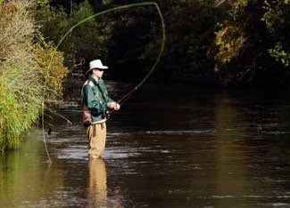

Fishing is one of the best summertime activities. You’re outdoors, surrounded by nature and away from the buzzing, jostling “real” world - and then there’s the fish! Grilled, pan-seared or cooked over a campfire, that crispy skin and tender meat is a real treat and it’s even good for you … except when it’s not.
“What?” you ask, “That fish was on my line 10 minutes ago. And just before that it was finning its way through a cool, clear pond. No processing, no packaging. It doesn’t get more healthful than this!”
In a perfect world, that’s true, and fish is generally considered one of the most healthful foods around. But it’s not the fish that’s a concern, rather what’s in the fish: chemicals such as mercury, PCBs (polychlorinated biphenyls, man-made organic chemicals found in items such as transformers, thermal insulation materials and plastics, among others), chlordane (an insecticide), dioxins (not usually intentionally produced, these heterocyclic hydrocarbons are created in the process of making other products, such as herbicides or during the bleaching process in paper production) and DDT, to name the five biggies.
While PCBs, chlordane and DDT have been banned, they’re all long-lasting chemicals that hang out in our waterways long after they’ve been introduced. And those big, top-of-the-food-chain specimens (think largemouth bass and walleye) get the worst of it. The chemicals accumulate in bottom-dwelling animals, but are passed up the food chain to fish. And when a bigger fish eats a smaller fish, the big guy just absorbs the contaminants that came with his meal. The big fish is then eaten by an even larger fish - and on and on the chain continues, until the top dogs - er, fish - ultimately end up with the highest contamination of these chemicals. Top predators may test for chemical levels a million times higher than that of their home waters.
While every single state in the U.S. has dozens (and some have hundreds) of spots that are rated as impaired, the good news is that the U.S. Environmental Protection Agency (EPA) and state and local governments have been working to clean up the waterways contaminated by these chemicals; and their efforts are paying off with waters that are progressively cleaner every year. And many lakes, rivers and coastal waters of the United States are home to fish that don’t contain dangerous levels of contamination - which means that all you need to know about what fish to eat is where to catch them.
The best place to start is the EPA’s National List of Advisories, which includes federal, state and tribal fish advisories. You can easily search by state to find advisories for local fishing areas and find contact information for the your local authority (often a Fish & Wildlife agency, and a great way to make sure you get the most current information). Plus, you can request their brochure, Should I Eat the Fish I Catch?, which also includes tips for how to trim and cook fish to minimize health risks.
Happy fishing; and happy, healthy eating!
Have you ever had to throw back your catch because it was contaminated? Share you story by posting a comment below.
|
 ISTOCKPHOTO Find the best spots for fishing in your state and enjoy the fishing and the fish! |
|
|